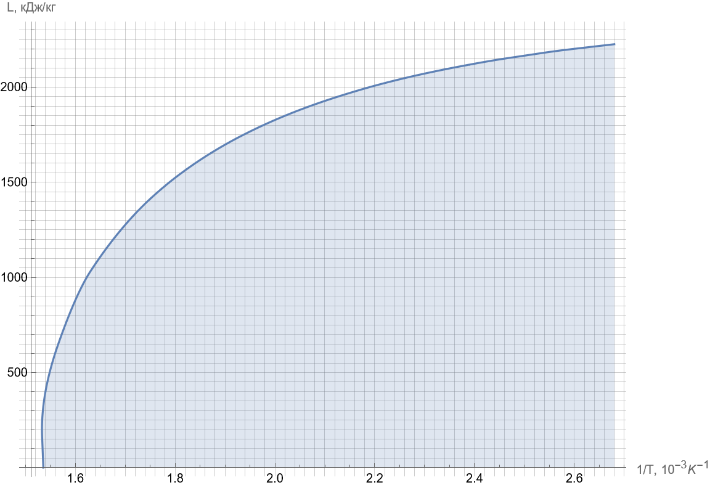

Liquid-vapor transition --- Solution
W24 (2024) — English translation
A1Write down an equation that will allow you to use the simple iteration method to find the value $\dfrac{T_\mathrm c}{L_0}$, and equations that will allow you to find the values $T_\mathrm c$ and $L_0$ from there.1.00
\[\left\{\begin{array}l\dfrac{L_1}{L_0}=\operatorname{th}\left[\dfrac{L_1T_\mathrm c}{L_0T_1}\right]\\\dfrac{L_2}{L_0}=\operatorname{th}\left[\dfrac{L_2T_\mathrm c}{L_0T_2}\right]\end{array}\right.\implies L_1\operatorname{th}\left[\dfrac{L_2T_\mathrm c}{L_0T_2}\right]=L_2\operatorname{th}\left[\dfrac{L_1T_\mathrm c}{L_0T_1}\right]\implies\frac{T_\mathrm c}{L_0}=\frac{T_2}{L_2}\operatorname{arth}\left[\frac{L_2}{L_1}\operatorname{th}\left[\frac{L_1}{T_1}\frac{T_\mathrm c}{L_0}\right]\right]\\\implies L_0=L_1\Bigg/\operatorname{th}\left[\frac{L_1}{T_1}\frac{T_\mathrm c}{L_0}\right],\quad T_\mathrm c=L_0\times\frac{T_\mathrm c}{L_0}\]
Answer: \[\frac{T_\mathrm c}{L_0}=\frac{T_2}{L_2}\operatorname{arth}\left[\frac{L_2}{L_1}\operatorname{th}\left[\frac{L_1}{T_1}\frac{T_\mathrm c}{L_0}\right]\right],\quad L_0=L_1\Bigg/\operatorname{th}\left[\frac{L_1}{T_1}\frac{T_\mathrm c}{L_0}\right],\quad T_\mathrm c=L_0\times\frac{T_\mathrm c}{L_0}\]
A2For each pair of points, find the values $T_\mathrm c$ and $L_0$.4.00
Answer: $t_1,~{}^\circ\mathrm C$ $L_1,~\frac{кДж}{kg}$ $t_2,~{}^\circ\mathrm C$ $L_2,~\frac{кДж}{kg}$ $T_\mathrm c,~\mathrm{K}$ $L_0,~\frac{кДж}{kg}$ 151.8 2108 247.3 1728 652.5 2419 158.8 2086 253.2 1697 653.2 2417 165.0 2066 258.8 1667 653.8 2414 170.4 2048 263.9 1638 654.1 2412 175.4 2030 266.4 1624 654.8 2409 179.9 2014 271.1 1596 655.0 2407 184.1 1999 277.7 1556 655.5 2405 188.0 1985 281.9 1530 655.9 2404 191.6 1971 285.8 1504 656.0 2402 195.0 1958 289.6 1478 656.1 2401 198.3 1946 293.2 1453 656.1 2402 201.4 1934 296.7 1428 656.1 2401 204.3 1922 300.1 1403 656.1 2400 209.8 1900 303.3 1378 656.0 2400 212.4 1889 306.5 1353 656.2 2399 217.2 1868 309.5 1328 656.2 2398 221.8 1849 312.4 1304 656.0 2400 228.1 1820 315.3 1279 656.1 2398 233.8 1794 318.0 1254 655.8 2400 240.9 1760 320.7 1229 655.6 2401
A3Find the arithmetic average of the values you obtained, $\overline T_\mathrm c$ and $\overline L_0$.0.50
Answer: \[\overline T_\mathrm c=655.3~\mathrm{K},\quad\overline L_0=2404~\frac{кДж}{kg}\]
B1Write down a formula that allows you to use the simple iteration method to find $L\left(\dfrac1T\right)$ using the values $\overline L_0$ and $\overline T_\mathrm c$ obtained in the previous part.0.30
Answer: \[L=\overline L_0\operatorname{th}\left[\frac{\overline T_\mathrm c}{\overline L_0} L\frac1T\right]\]
B2Using this formula, find the dependence of $L\left(\dfrac1T\right)$ in the temperature range from $t=100~{}^\circ\mathrm C$ to $T_\mathrm c$. Note: Count at least 20 points, try to cover the range uniformly. This will increase the accuracy of your further calculations.2.00
Note: Count at least 20 points, try to cover the range uniformly. This will increase the accuracy of your further calculations.
$1/T,~10^{-3}~\mathrm{K}^{-1}$ $L,~\mathrm{kJ}/kg$ $1/T,~10^{-3}~\mathrm{K}^{-1}$ $L,~\mathrm{kJ}/kg$ 1.54 395 2.14 1961 1.60 879 2.20 2007 1.66 1144 2.26 2047 1.72 1334 2.32 2082 1.78 1481 2.38 2113 1.84 1599 2.44 2141 1.90 1697 2.50 2165 1.96 1779 2.56 2188 2.02 1849 2.62 2207 2.08 1909 2.68 2225
B3Plot $L\left(\dfrac1T\right)$ from $t=100~{}^\circ\mathrm C$ to $T_\mathrm c$.0.50

B4Calculate the area $S$ under the graph.1.00
Answer: \[S=2.04\cdot10^3~\frac{Дж}{kg\cdotК}\] Note: The area can be calculated using the trapezoidal method, bypassing the direct construction of a graph.
B5Express the pressure $p_\mathrm c$ at the critical point in terms of $S$ and calculate it to three significant figures if the pressure is $p_\text{н}(100~{}^\circ\mathrm C)=1.013\cdot10^5~\text{Pa}$.0.70
Answer: \[p_\mathrm c=p_н(100~{}^\circ\mathrm С)\exp\left[{\frac{\mu S}R}\right]=8.36\cdot10^6~\mathrm{Pa}\] Note: the result turned out to be noticeably underestimated, since the Clapeyron–Clausius equation was written neglecting the specific volume of the liquid phase and the difference between vapor and an ideal gas, which is especially incorrect near the critical point.